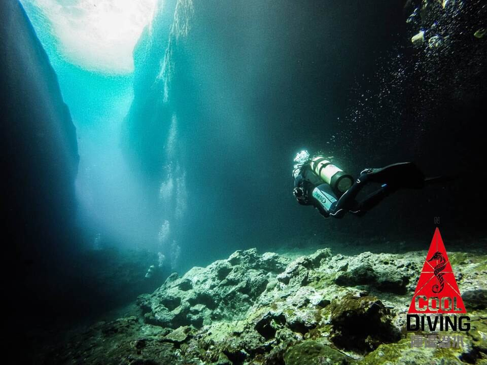
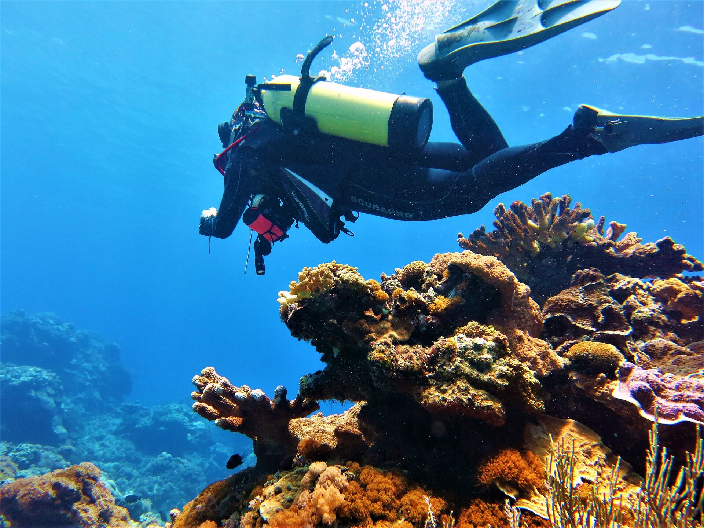
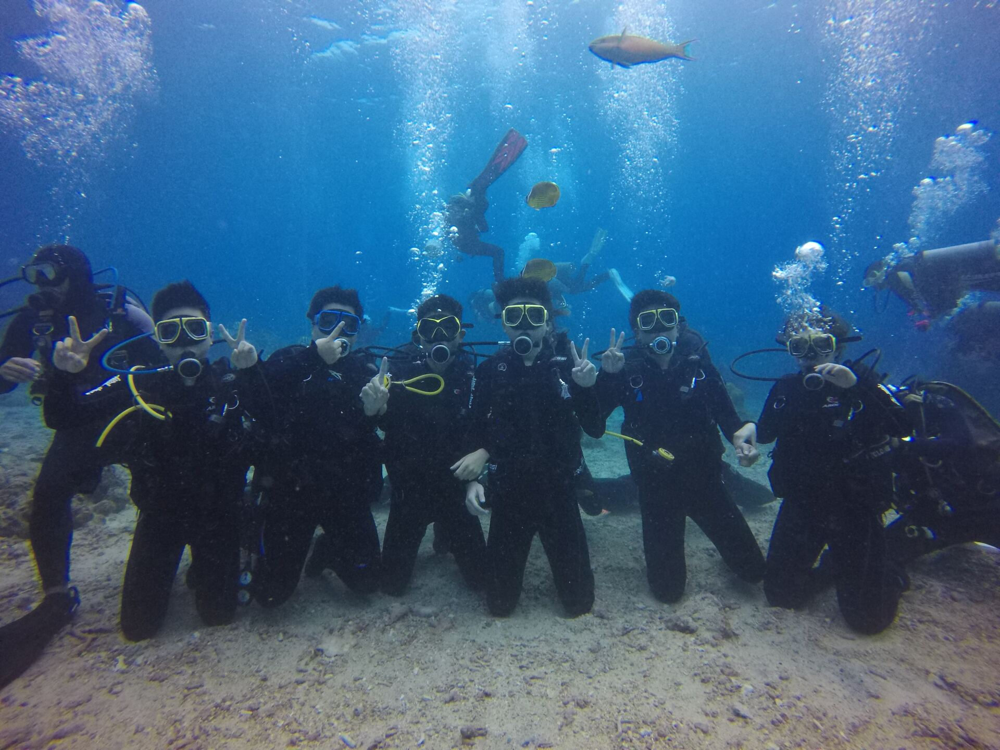
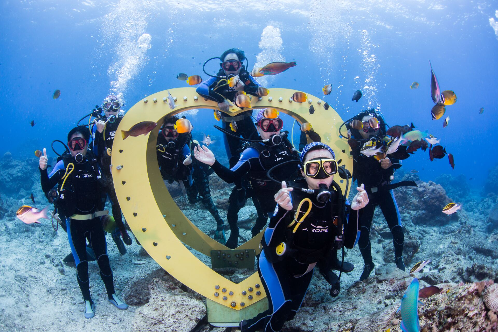
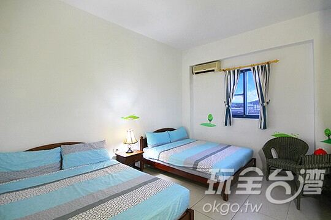
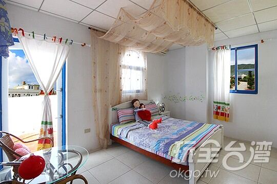

01
Day · Arrival
抵達綠島 · 泳池課
台東 · 富岡漁港集合 綠島
- 清晨於台東富岡漁港集合報到
- 搭船進島，安頓住宿與裝備
- 下午進行 PADI 泳池課程 (Confined Water)
- 晚餐後自由時間 · 講師簡介潛點

從台東富岡漁港集合出發，於綠島完成四天三夜的 PADI Open Water 全程訓練。




綠島島上民宿三晚住宿，雙人房或背包房二擇一，全程含早。


一次費用，包含證照、交通、島上機動性與住宿。
PADI Open Water Diver 全套課程教材、教練費、潛水裝備與認證費用。
富岡漁港 ⇄ 綠島南寮漁港 來回客船船票，依出航狀況彈性調整。
三天兩夜島上機車租借，課程通勤與自由探島皆方便。
於合法民宿入住三晚，可選雙人房或背包房，住宿含早。